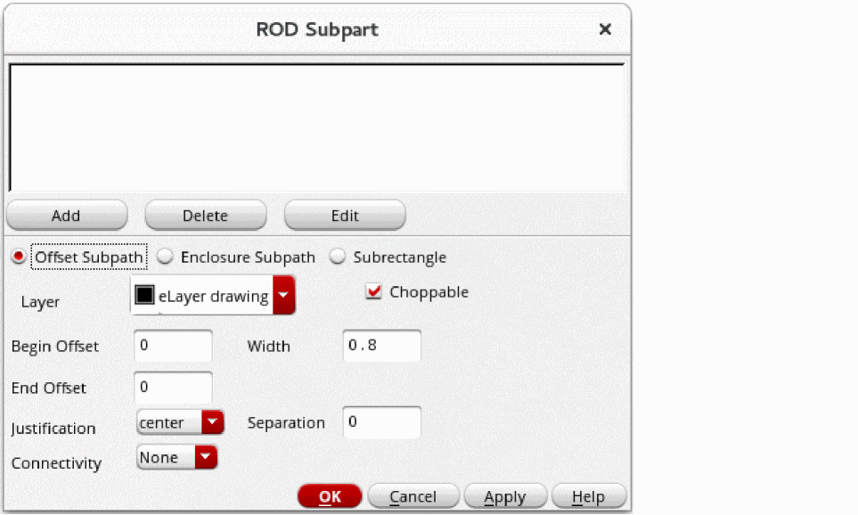

Adding an Offset Subpath
You can define a subpath coincident with an edge of the master path, on the left or right side of the master path, or overlapping the master path. This is called an offset subpath.
You can specify the width of the offset subpath or let it default to the minWidth rule for the subpath layer from the technology file. The location of an offset subpath in relation to the master path depends on the values of the Separation and Justification fields, in relation to the direction of the master path.
To add an offset subpath to the master path while creating a multipart path:
-
In the Create Multipart Path form, click the Subpart button.
The ROD Subpart form appears. -
Choose Offset Subpath.
 - For Layer, choose the layer for the offset subpath.
- Select the Choppable check box if the master path is set to choppable; otherwise set the offset subpath to choppable or not choppable, as desired.
- For Begin Offset, type a signed integer or floating-point number to specify the starting edge of the subpath in relation to the starting edge of the master path. A positive number extends the end of the subpath beyond the end of the master path; a negative number retracts the end of the subpath from the end of the master path.
- For End Offset, type a signed integer or floating-point number to specify the ending edge of the subpath in relation to the ending edge of the master path. A positive number extends the end of the subpath beyond the end of the master path; a negative number retracts the end of the subpath from the end of the master path.
-
For Width, do one of the following:
- Type a positive integer or floating-point number.
-
If you want to use the
minWidthrule for the subpath layer from the technology file, do not change the Width field.
If theminWidthrule is not defined in the technology file, you must specify a width; otherwise, the width remains zero and no subpath is created. -
For Separation and Justification, type a signed integer or floating-point number for Separation and choose a setting for Justification.
Whether you enter a positive or negative number depends on where you want to define the subpath in relation to the master path. -
For Connectivity, do one of the following:
- If you do not want to define connectivity, leave Connectivity set to None.
- If you want to associate the subpart with a net or specify it as a pin, see Defining Connectivity for a Subpart.
-
To add the new offset subpath to the window at the top of the ROD Subpart form, click Add.
The system displays a line of data for the new offset subpath in the box. -
To save the new offset subpath as part of the MPP, click OK or Apply in the ROD Subpart form.
You must click OK or Apply to make the new offset subpath part of the MPP.
You have defined a new enclosure subpath only for the MPP in the current layout window. If you want to add the new subpath to an MPP template, you will need to save your changes to the template.
You can also use the shortcut menu in the Property Editor assistant to add an offset subpath.
For information about the overall steps involved in creating an MPP, see Flow for Creating Multipart Paths.
Related Topics
Return to top